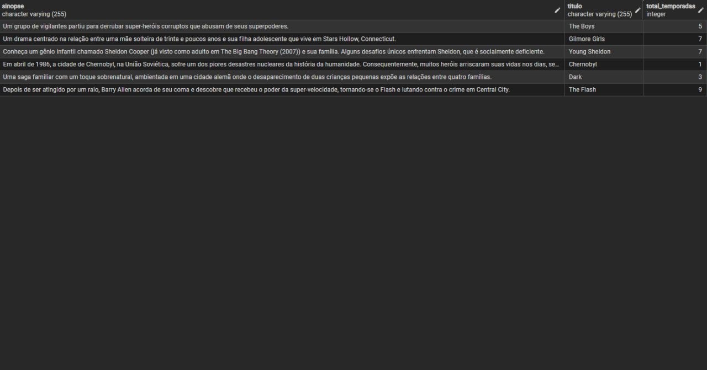
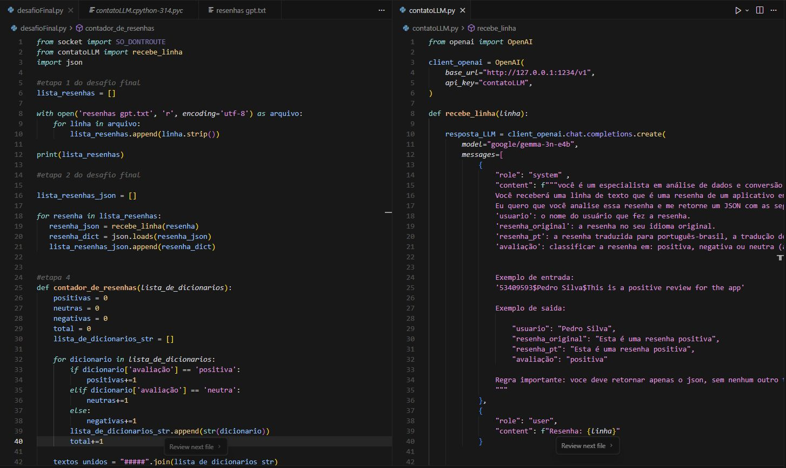

Desenvolvedor júnior Java e apaixonado pela área de dados. Aplicações com Spring Boot e exploro análise de dados com Python e SQL — sempre buscando transformar informação em valor real.
O que eu sei fazer
Foco em Java para backend e Python/SQL para análise de dados — duas áreas que se complementam muito bem.
O que eu já construí
Projetos que combinam backend Java e análise de dados — mostrando as duas faces do meu perfil.


Vamos conversar
Estou em busca de oportunidades como desenvolvedor júnior — seja em backend Java, análise de dados ou projetos que combinem os dois. Me manda uma mensagem!